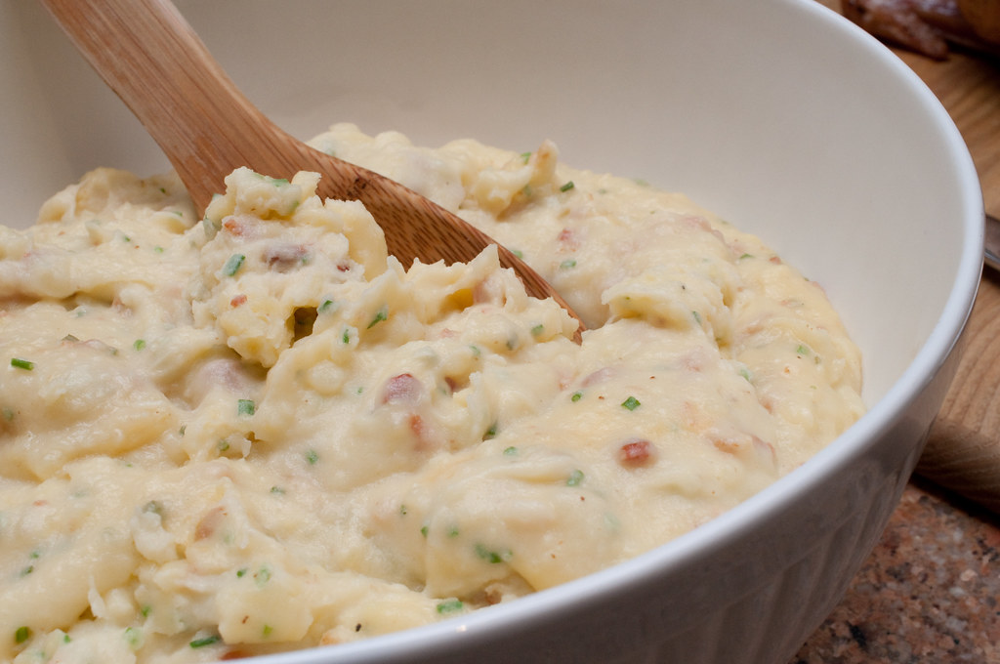

Loaded Mashed Potatoes Recipe

Loaded mashed potatoes combine the best parts of a loaded baked potato with traditional creamy mashed potatoes.
They're delicious, super rich, and comforting!
Ingredients:
- 4 slices of bacon
- 3 lbs. potatoes, peeled and chunked
- 1/2 cup butter
- 16 oz. sour cream
- 8 oz. shredded cheddar cheese
- 1/2 cup chopped chives
- salt and ground pepper to taste
Steps:
- Cook bacon in skillet over medium heat until crisp
- Bring chopped potatoes to boil in large pot with salted water ~20 mins
- Mash butter into potatoes until well-combined
- Add sour cream, crumbled bacon, cheese, and chives
- Continue to mix, adding salt and pepper to taste
- Enjoy!
Nutrition:
| Calories |
Fat |
Carbs |
Protein |
| 514 |
34g |
40g |
14g |
Home